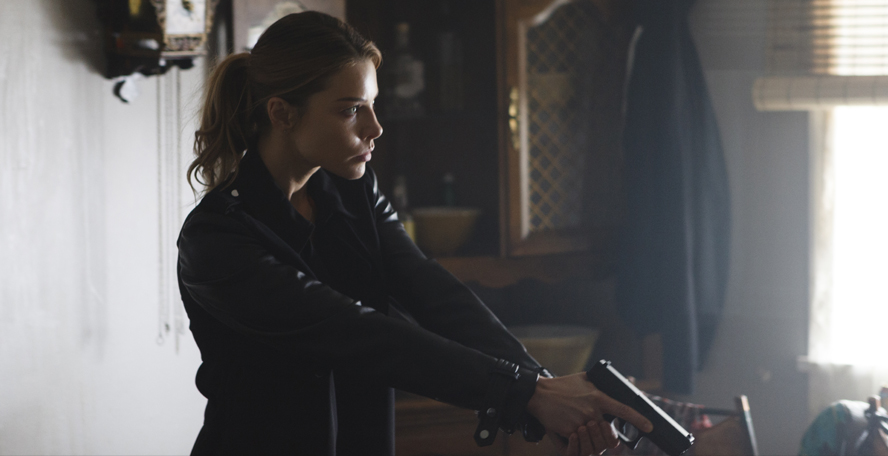
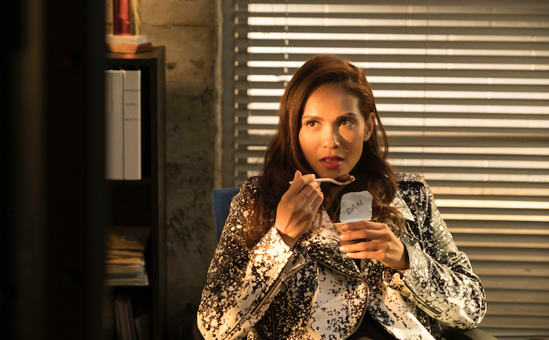
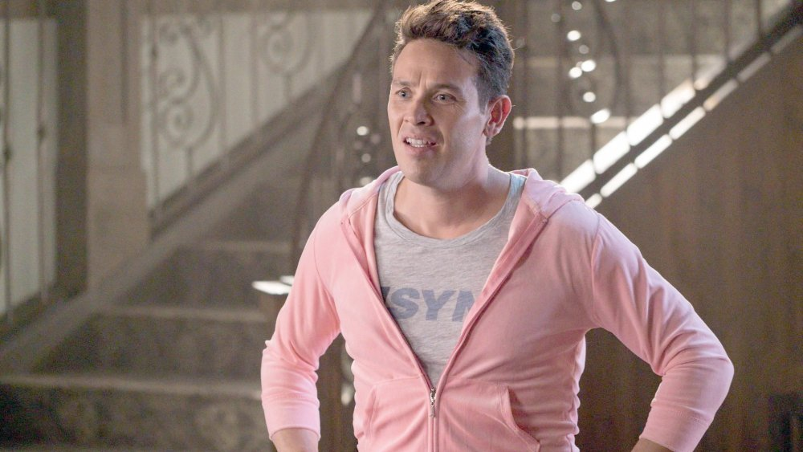
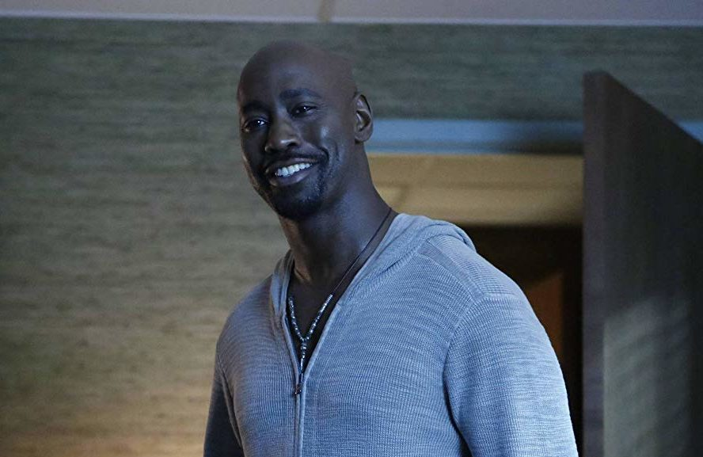

Chloe Decker- Chloe Decker was the head officer of the case in which Lucifer was first involved in. She is unaffected by Lucifer's charms until she truly falls in love with him later. She finds out his true identity while he saves her, and from then on their relationship blossomed bringing on many funny moments.
Mazikeen- Mazikeen is a demon who came to Los Angeles with Lucifer. She works as his assassin and helper. Maze(as she is called by friends) has internal dillema over what and who she is as a person. Lucifer initally does not take care of her emotions and tells her she is a demon and can't have feelings or have care for someone. After finding her mother(an old demon), Maze solves her inner problems. She is shown as steel-tough, no nonsense girl, who lashes out violently to protect her friends.
Dan Espinoza- Dan is the divorced husband of Chloe Decker and shares a love hate relationship with Lucifer. Dan assists Lucifer on some adventures which must stay under the grid. He is initially shocked by Lucifer's true identity but later on get used to it. He is a good-looking, athletic, samrt, and positve man.
Ella Lopez- Ella is the new forensics expert in LAPD. She is a lively, positve energy filled, officer and always looks for a way to make a joke. Ella doesn't believe Lucifer when he says he is the devil, and believes he is practicing cosplay. She considers her best friends with Lucifer.

Amenedial- Amenedial is Lucifer's brother from heaven. Initially he despises Lucifer's decision to stay on Earth but later he also moves in and starts living lifr in Los Angeles. Amenedial takes time to adjust to the human lifestyle, but later has a child with Dr.Linda
Dr.Linda- Dr.Linda is Lucifer's "therapist". He spills his problems with human life to her, and knowing he is the devil she willingly provides guidance. She is good friends with Maze, and has helped the devil on many things such as when she helped "kill" him to send him back to hell for a few moments.
Trixie Espinoza- Trixie is the young child of Chloe Decker. She is best friends with Maze, and thinks Lucifer is the coolest person she has ever met. Lucifer doesn't like her company at first but slowly starts developing a bond with her

Eve- Eve is Lucifer's first ever love in hell. She comes to Earth to be with Lucifer but ends up realizing the relationship is no longer there. While she tries to include herself in the devil's life her efforts fail, and she realizes and stops trying.